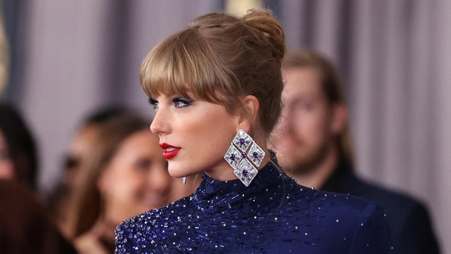

Taylor Swift hingga Ke Huy Quan Diundang Jadi Anggota the Academy "Taylor Swift hingga Ke Huy Quan Diundang Jadi Anggota the Academy"

Jakarta, CNN Indonesia -- Academy of Motion Pictures Arts and Sciences (AMPAS) mengumumkan 398
seniman dan eksekutif industri film yang diundang bergabung menjadi anggota tahun ini. Beberapa di
antaranya adalah Taylor Swift dan Ke Huy Quan.
Ada pula Austin Butler (Elvis), Paul Mescal (Aftersun), Stephanie Hsu (Everything Everywhere All at
Once), dan Kerry Condon (The Banshees of Iniherin) sebagai penerima undangan tahun ini.
![]()